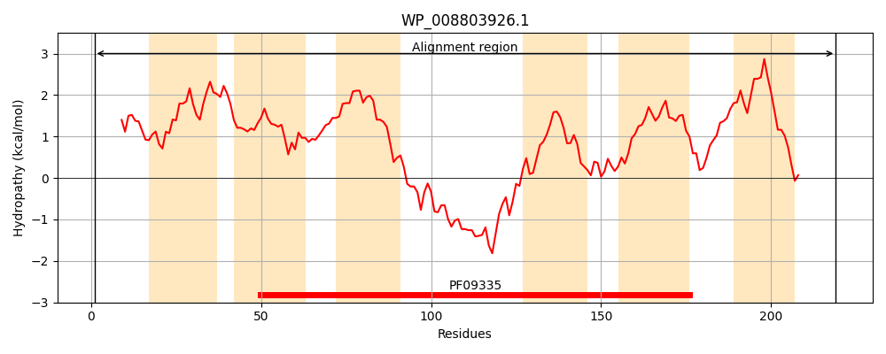
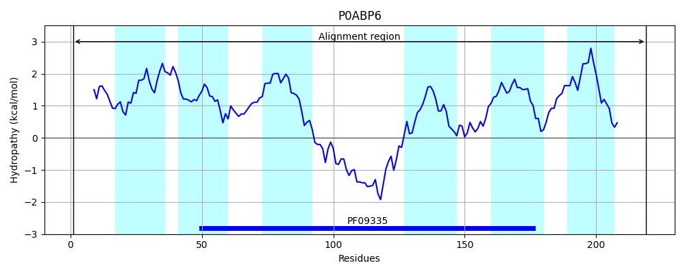
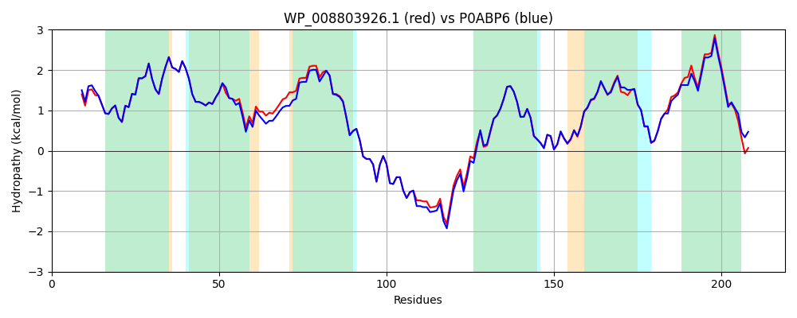

Hit Accession: P0ABP6
Hit TCID: 9.B.27.2.3
Hit Description: gnl|BL_ORD_ID|8722 gnl|TC-DB|P0ABP6|9.B.27.2.3 Protein dedA OS=Escherichia coli (strain K12) GN=dedA PE=1 SV=1
Mach Len: 219
e:0.000000
Query TMS Count : 6
Hit TMS Count: 6
TMS-Overlap Score: 5.700000
Predicted Substrates:CHEBI:9090;selenite(2-)
BLAST Alignment:
Score: 1035 , Bit scores: 403 bits, E-value: 3.1e-145, Alignment length: 219, Percentage identity: 90
Query: 1 MDLIHFLIDFILHIDVHLAELVAQYGVWVYAILFLILFCETGLVVTPFLPGDSLLFVAGALSALPTNDLNVHLMVLLMVIAAIVGDAVNYTIGRLFGEKLFSNPNSKIFRRSYLDKTHSFYERHGGKTIILARFVPIVRTFAPFVAGMGHMSYRHFAAYNVVGALLWVLLFTYAGYLFGDLPVVQENLKLLIVAIIVLSVLPGVIEIIRHKRAASKQAK 219
MDLI+FLIDFILHIDVHLAELVA+YGVWVYAILFLILFCETGLVVTPFLPGDSLLFVAGAL++L TNDLNVH+MV+LM+IAAIVGDAVNYTIGRLFGEKLFSNPNSKIFRRSYLDKTH FYE+HGGKTIILARFVPIVRTFAPFVAGMGHMSYRHFAAYNV+GALLWVLLFTYAGY FG +P+VQ+NLKLLIV IIV+S+LPGVIEIIRHKRAA++ AK
Sbjct: 1 MDLIYFLIDFILHIDVHLAELVAEYGVWVYAILFLILFCETGLVVTPFLPGDSLLFVAGALASLETNDLNVHMMVVLMLIAAIVGDAVNYTIGRLFGEKLFSNPNSKIFRRSYLDKTHQFYEKHGGKTIILARFVPIVRTFAPFVAGMGHMSYRHFAAYNVIGALLWVLLFTYAGYFFGTIPMVQDNLKLLIVGIIVVSILPGVIEIIRHKRAAARAAK 219 | Protein Hydropathy Plots: |
|---|
|  |  |
Pairwise Alignment-Hydropathy Plot:
|
|---|
|  |